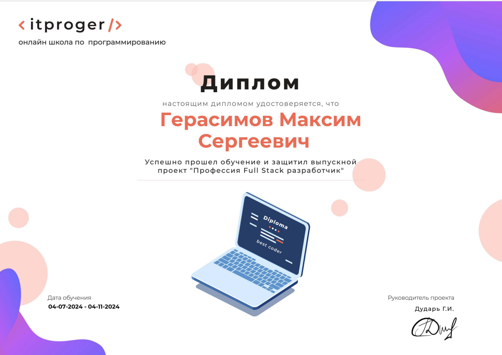

Обо мне
Ищу позицию Junior DevOps / Infrastructure Engineer. Москва, гибрид, удалённый формат или офис.
Как я сюда
пришёл
Начинал с разработки: C и C++ в университете, затем курс full-stack на itProger и учебные проекты на PHP. Довольно быстро стало понятно, что мне интереснее не сама разработка, а то, как приложение живёт после неё: где оно запускается, что делать, когда оно падает, и почему на соседней машине оно работает иначе.
В феврале 2025 года прошёл отборочный интенсив Школы 21 и занял первое место в рейтинге среди 250 участников. С апреля 2025 года иду по направлению DevOps — параллельно с очной учёбой в НИУ МГСУ.
За 16 месяцев — 13 инженерных проектов. Последние семь выполнены на одной системе: микросервисное приложение из семи сервисов, которое я последовательно перевозил из Docker Swarm в Kubernetes, обвешивал мониторингом, шаблонизировал и в итоге научился выкатывать пайплайном. Это дало сквозное понимание системы: где что ломается, как одно решение тянет за собой следующее и во что обходится неаккуратная конфигурация на предыдущем слое.
Что я умею
делать руками
- Поднять стенд из нескольких виртуальных машин и описать его кодом, а не собрать вручную.
- Разложить приложение по контейнерам и оркестрировать его — в Docker Swarm или Kubernetes.
- Настроить сбор метрик и логов так, чтобы причина сбоя находилась по дашборду, а не обходом узлов по SSH.
- Собрать пайплайн, который отсекает нерабочий код до выката.
- Разобраться, почему не работает: прочитать логи, проверить маршрут пакета, права в RBAC, DNS внутри пода — и найти причину, а не подобрать обход.
Образование
- НИУ МГСУ — Национальный исследовательский Московский государственный строительный университет, «Информационные системы и технологии» (инженер), бюджет — 2023–2027
- Школа 21 (образовательный проект Сбербанка), направление DevOps, с апреля 2025. 64 проведённых code review
- itProger — «Full-stack разработчик», сертификат — 2024
- Школу окончил с золотой медалью, ЕГЭ по информатике — 90 баллов.
Кроме работы
11 лет профессионального плавания, кандидат в мастера спорта. Оттуда привычка доводить задачу до конца и спокойно относиться к разбору собственных ошибок — в Школе 21 это пригодилось: 64 проведённых code review — это в том числе умение объяснить, что не так, и принять то же самое в свой адрес.
Английский — B1, читаю техническую документацию в оригинале.
Сертификат
